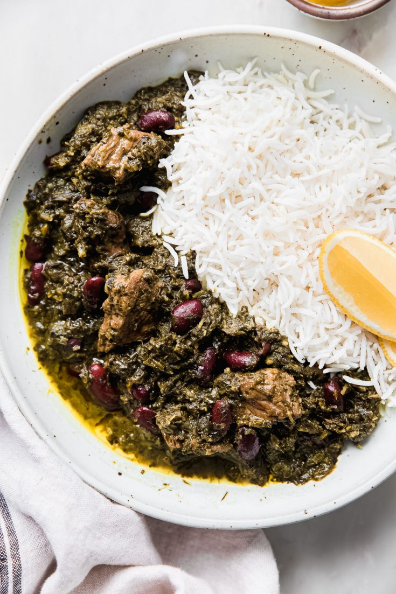

Ghormeh Sabzi
Home

Description
Ghormeh Sabzi is a traditional Persian herb stew. The dish is made with a mixture of herbs, red kidney beans, and meat such as lamb or beef. It is flavored with dried lime and served over Persian-style steamed rice. Ghormeh Sabzi is a beloved and iconic dish in Iranian cuisine.
Ingredients
- 1 pound lamb or beef, cubed
- 1 large onion, diced
- 4 tablespoons dried fenugreek leaves
- 1 cup chopped parsley
- 1 cup chopped cilantro
- 1/2 cup chopped chives
- 2 dried limes
- 1 cup red kidney beans, soaked overnight
- 1 teaspoon turmeric
- Salt and pepper to taste
Steps
- In a large pot, heat oil over medium heat and sauté the onions until golden. Add turmeric and stir.
- Add the cubed meat and cook until browned on all sides.
- In a separate pan, fry the chopped herbs (parsley, cilantro, and chives) along with fenugreek leaves for about 10 minutes. Add them to the pot with the meat.
- Add the soaked kidney beans and dried limes (pierced with a fork) to the pot. Pour in enough water to cover the mixture.
- Simmer the stew on low heat for about 2-3 hours, stirring occasionally. Add salt and pepper to taste.
- Serve hot over steamed rice.